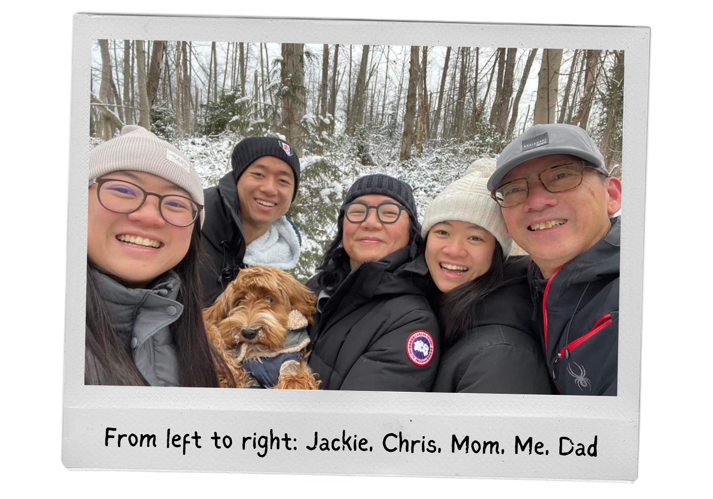

Pictured below is my family – my parents, Jane and Ricky, and sister Jacqueline live in my hometown on the West Coast while my Brother Chris and I live on the East Coast of the US. Since scattering across the continent, we’ve kept in touch through Facebook Messenger, sending each other anything and everything, including updates about our lives and a lot of food pics.

Also pictured is Gordon, the spoiled labradoodle my parents brought home in September 2021. Since then, I've noticed a surge in activity in our group chat, especially among the West Coasters living at home with Gordon (Mom, Dad, and sister Jacqueline). I’ve suspected these changes for a while and wantted to back up my observations with data. So, with everyone's permission, I downloaded and analyzed a year's worth of our group chat messages.
I first looked for a spike in messages, photos, and videos. This chart shows a clear upward trajectory following Gordon’s arrival across all categories. While the increases do not show causation, as there are other potential factors and life events contributing to the increases, it is evident that the group chat indeed has been more active since Gordon was brought home in September 2021.
I then broke down who was sending what, and also looked into who was sending messages that specifically mentioned ‘Gordon’ in the content. Since I was unable to tag photos that include Gordon and include messages that allude to him without mentioning this name, I acknowledge this process wasn’t perfect. However, my analysis supports that the West Coast family members are more active participants than the East Coasters.